Lavoro svolto fin'ora in laboratorio
Per ripetere gli argomenti trattati fin'ora in laboratorio ho creato questa repository e vi posto anche del materiale video
Abbiamo visto cos'è wordpress, cos'è un servizio di hosting, come configurare i parametri per la connessione al database
Pre-configurazione
- Attivazione hosting
- Attivazione database per connessione al CMS
- Installazione wordpress
Wordpress
-
Panoramica sulla bacheca 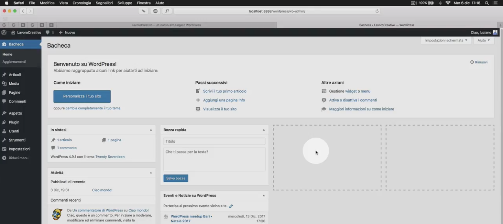
-
- Creazione/modifica cancellazione articoli
- Tassonomie: Differenza tra categorie e tag e gestione su wordpress
Cos’è WordPress ?
WordPress è un CMS (Content Management System) ovvero un sistema di gestione dei contenuti che ti permette di poterlo utilizzare per creare siti internet e blog senza conoscere nulla di programmazione.
Nella pagina Wikipedia c’è scritto che WordPress è una piattaforma software di “Blog”, questo poteva essere vero i primi anni ma negli anni successivi la piattaforma ha fatto dei passi da gigante tanto che oramai viene utilizzata per qualsiasi tipologia di sito web.
È un software Opens Source sotto GNU creato nel 2003 da Matt Mullenweg e Mike Little distribuito sotto licenza GPLv2. La filosofia dietro il movimento del software Open Source è che sei libero di utilizzare, distribuire, copiare, modificare e/o migliorare WordPress senza dover chiedere il permesso a nessuno.
Il lavoro per contribuire a mantenere e migliorare sempre WordPress arriva da migliaia di sviluppatori, esperti, blogger, semplici utenti sparsi in tutto il mondo ed è per questo che WordPress non si può più ritenere di proprietà di una singola persona o società ma di tutti indistintamente.
È sviluppato in PHP e per il suo funzionamento si appoggia ad un gestore di dati MySQL.
Una delle peculiarità di questo software è di essere gratuito, questo vuol dire che per scaricarlo, installarlo ed utilizzarlo non dovrai pagare mai nulla, neanche a distanza di tempo, nessun abbonamento mensile, anche se a volte ho avuto clienti provenienti da agenzie web (anche rinomate) che si sono visti chiedere dei soldi per poter utilizzare WordPress.
Non farti trarre in inganno dal fatto che sia gratuito, WordPress ha alle spalle una comunità di sviluppatori e supporto tra le più grandi al mondo e viene utilizzato da i più grandi brand del mondo come ad esempio il New York Times, Microsoft, Playstation, Walt Disney, Mercedes-Benz; personaggi famosi come Sylvester Stallone, Rolling Stones, Usain Bolt e molti altri.
Come funziona
Cosa serve per far funzionare WordPress ?
- Un servizio hosting
- Un database MySQL, sempre incluso in un servizio hosting specifico per WordPress
- Un tema, anche gratuito, meglio professionale
- Plugin, opzionali secondo esigenze
Nota: WordPress potrebbe essere utilizzato anche senza i suddetti servizi con un’installazione in locale tramite software XAMPP che ti da la possibilità di installare WordPress direttamente nel tuo pc (in locale appunto) senza nessun costo, poterlo utilizzare e testare, oppure anche creare il tuo sito per poi spostarlo caricandolo in uno spezio web per renderlo visibile a tutti online.
Cos'è un hosting
Si definisce hosting un servizio di rete che consiste nell'allocare su un server web delle pagine web di un sito web o di un'applicazione web, rendendolo così accessibile dalla rete Internet e ai suoi utenti.
Tale "server web" è connesso ad Internet in modalità idonea a garantire l'accesso alle pagine del sito mediante il web browser dell'host client dell'utente, con identificazione dei contenuti tramite dominio ed indirizzo IP. Il servizio può essere gratuito o a pagamento, tipicamente a qualità maggiore nel secondo caso.
Hosting gratuito su altervista
AlterVista è una piattaforma web Italiana dove è possibile aprire gratuitamente un sito web, un blog e guadagnare con il proprio traffico web. Fondata nel 2000 da uno studente del Politecnico di Torino.
Per installare wordpress utilizzeremo proprio il servizio gratuito di hosting di www.altervista.org
Installazione wordpress su altervista
Registrazione su altervista
-
Andare su altervista.org
-
Cliccare su HOSTING
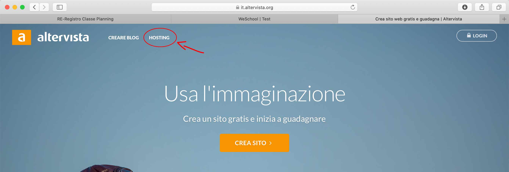
-
Continuare la registrazione
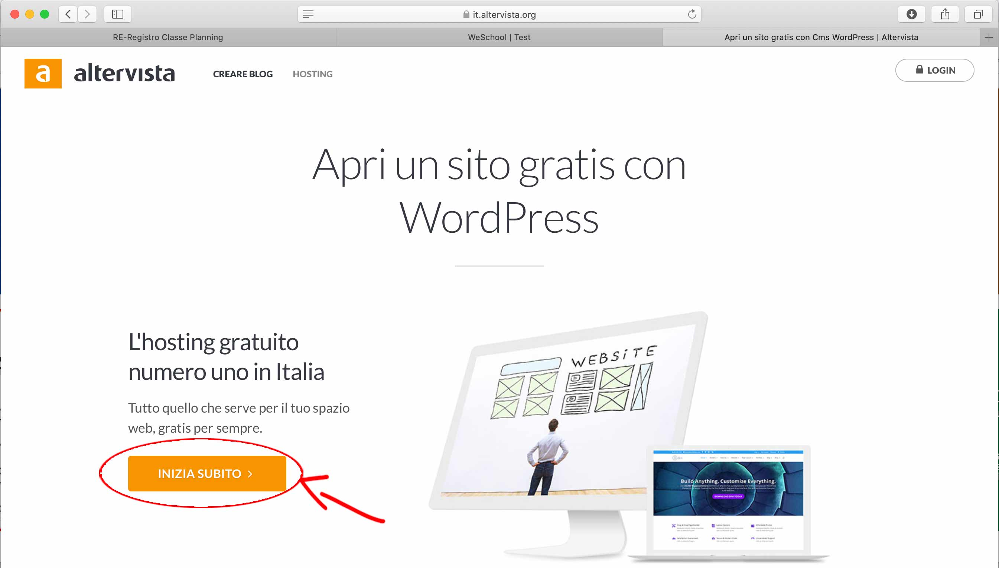
-
Proseguire Mi raccomando lascia selezionata l'impostazione Attiva un Hosting, se dovessi scegliere come impostazione Wordpress senza limiti attiverai l'installazione automatica che no ti darà accesso a tutti i file del CMS e nemmeno del database, ma solo all'area backend.

-
Compila tutti i campi
Inserisci il nome del sito che intendi registrare. Se ad esempio scegliessi come nome "vallauri" la URL per accedere al sito sarebbe es. http://vallauri.altervista.org
"valauri" è un sottodominio o dominio di terzo livello
Se volessimo registrare un dominio senza l'aggiunta del parola
.altervista.orgdovremmo passare a delle soluzioni a pagamento.Compila anche tutti gli altri dati
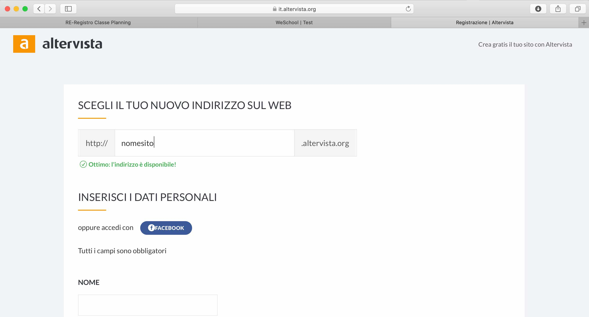
-
Una volta compilato tutti i campi ed inserita una mail valida avrai completato la registrazione.
Riceverai una mail di attivazione dell'account ed un'altra con le credenziali di accesso all'hosting.
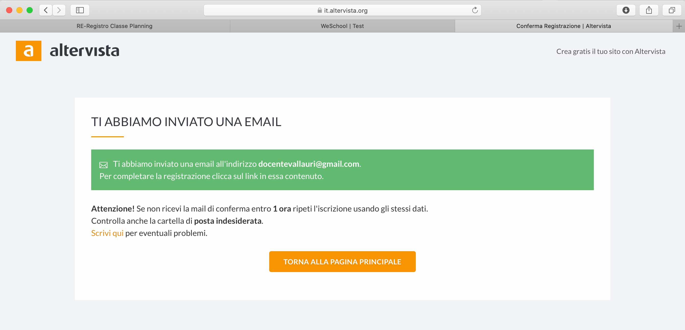
-
La tua registrazione e completata e la bacheca di altervista appare così.
Per poter installare wordpress però abbiamo bisogno di un database, pertanto dovremo attivarlo dal pannello di altervista
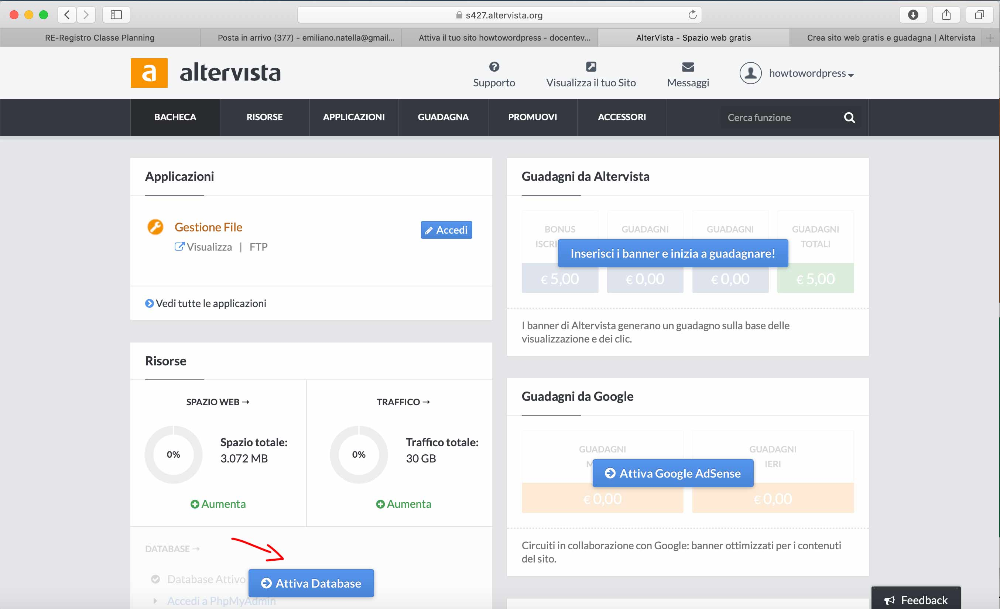
-
Conferma l'attivazione
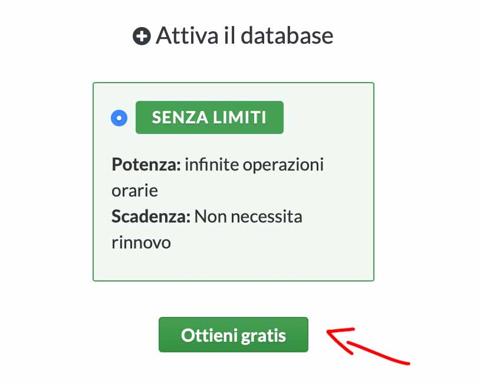 -
Adesso sulla bacheca noterai che hai attivato il database. Da qui potrai accedere sia al pannello di PhpMyAdmin (per ora non toccare niente in quest'area) che ai parametri di configurazione del database "Gestisci database".
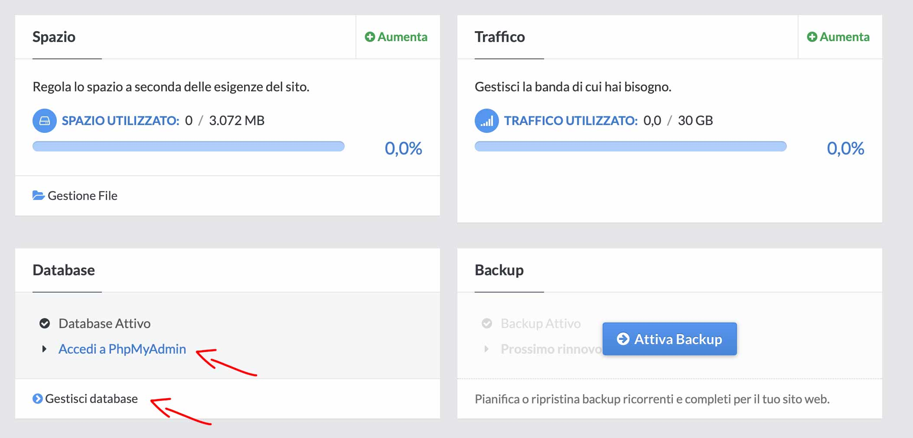
Pannello PhpMyAdmin
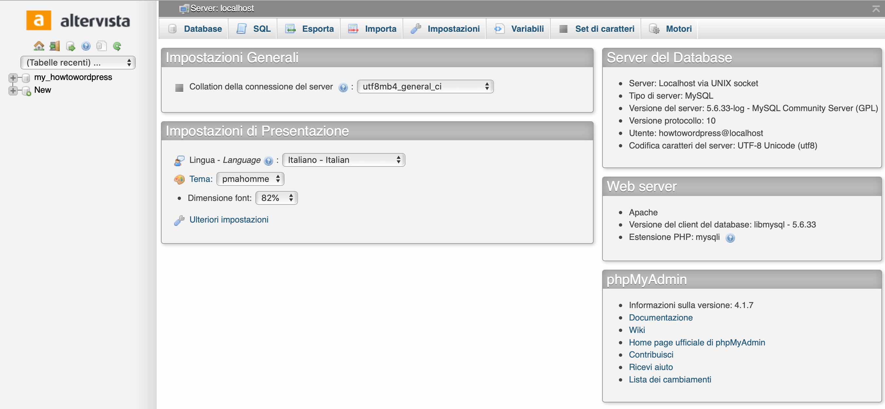
Parametri per la connessione al database, ci serviranno poi per installare wordpress:
- Hostname: è l'indirizzo dell'host server del database, in questo caso è localhost
- username: lo username dell'amministratore
- Password: password amministratore, in questo caso è vuoto e lasciatelo così visto che stiamo sperimentando per motivi didattici e che non dobbiamo proteggere dati sensibili
- Database: è il nome del database
Installazione wordpress su altervista
-
Apri una nuova scheda del browser e scarica l'ultima versione di wordpress, vai su www.wordpress.org e clicca su Get Wordpress
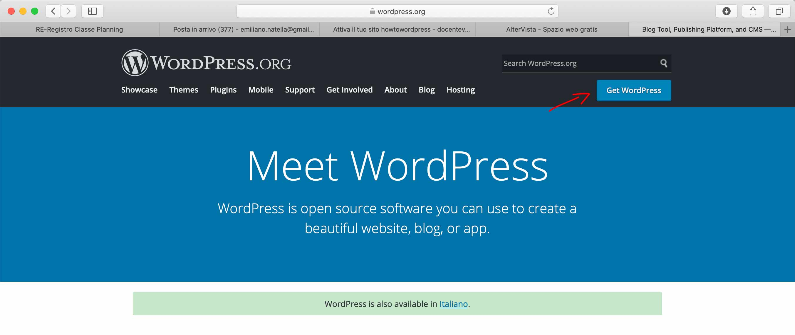
Nota la sezione dei Requirements, sono i requisiti minimi consigliati che dovrà avere il tuo hosting. Clicca su download
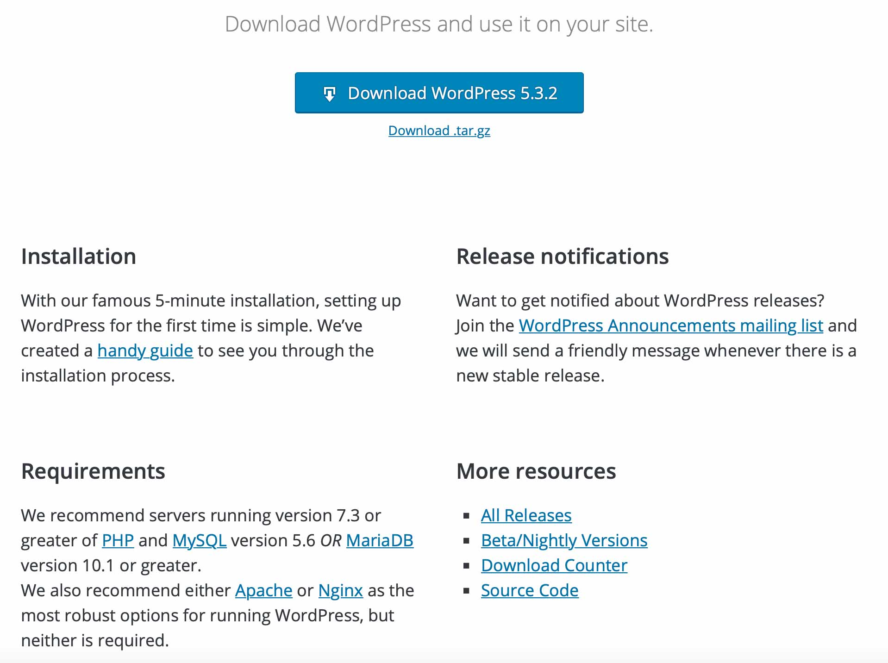
-
Adesso torna sulla bacheca di altervista (ricorda che le credenziali le trovi sulla mail) e clicca sull'area di gestione file che serve appunto per caricare i file sul tuo spazio web. Da qui dovremmo fare l'upload di wordpress
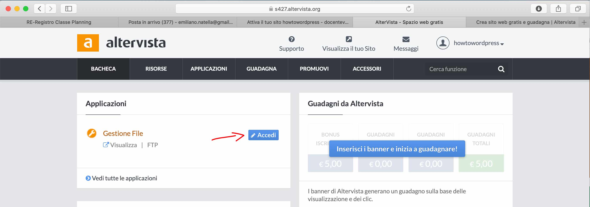
Al momento c'è soltanto un file html di nome
index.htmlche ha generato altervista. Clicca su invia file per caricare wordpress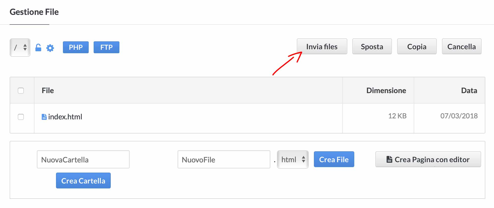
Wordpress è stato scaricato come archivio compresso (.zip) e con altervista come con altri servizi di hosting abbiamo la possibilità di fare l'upload di un file compresso senza dover necessariamente decomprimere il file prima del caricamento. Clicca su Invia archivi compressi
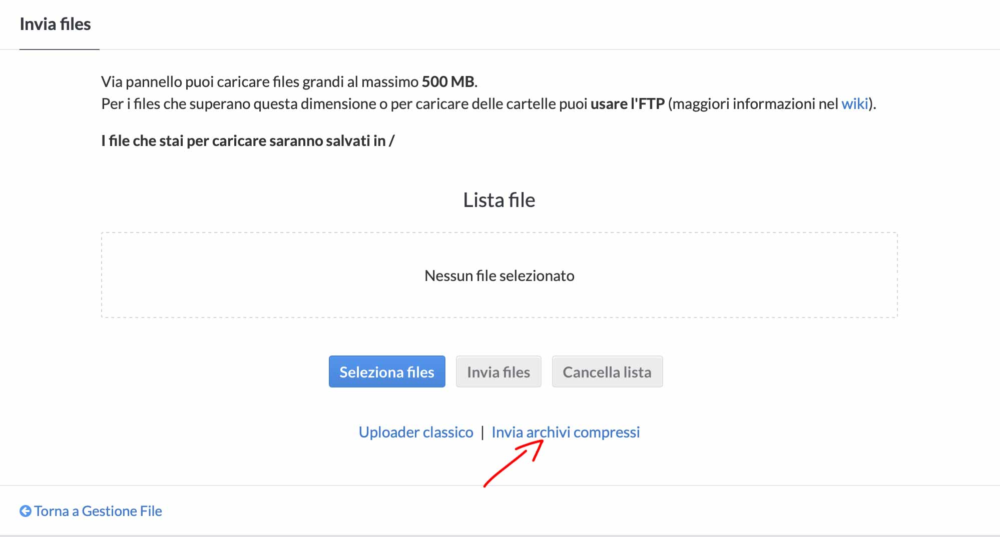
Una volta confermato e completato l'upload dovresti avere una cartella wordpress tra i tuoi file. Prima di procedere all'installazione di wordpress se vuoi puoi cambiare il nome della cartella. Il tuo sito wordpress sarà accessibile tramite questa cartella attraverso la URL www.nomedominio.altervista.org/wordpress/
Se vuoi installare wordpress sulla root principale di altervista allora sposta tutto il contenuto della cartella wordpress dove si trova il file index.html, ma cancella o rinomina quest'ultimo ad es. indexOLD.html.
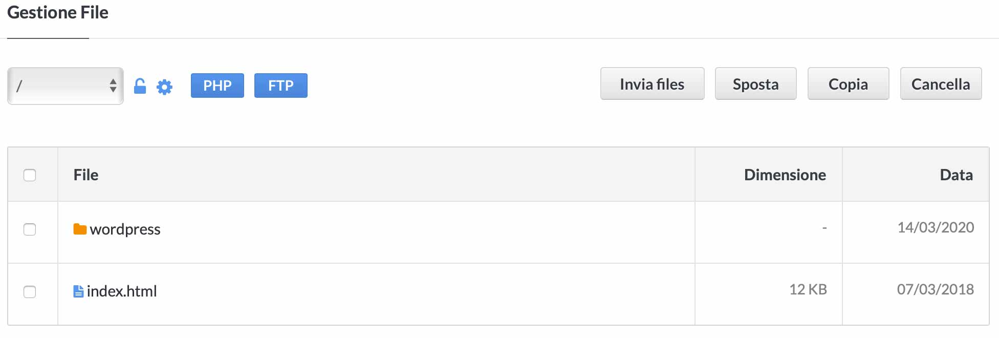
Il sito sarà accessibile da qui
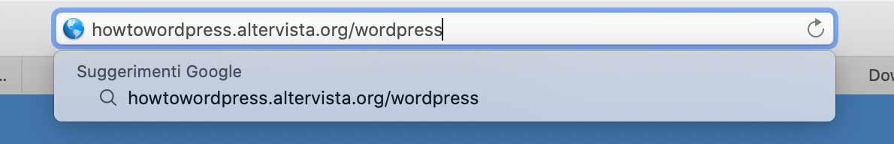
Adesso se tutto è andato bene, ti dovrebbe apparire una schermata che ti permette l'installazione guidata di wordpress
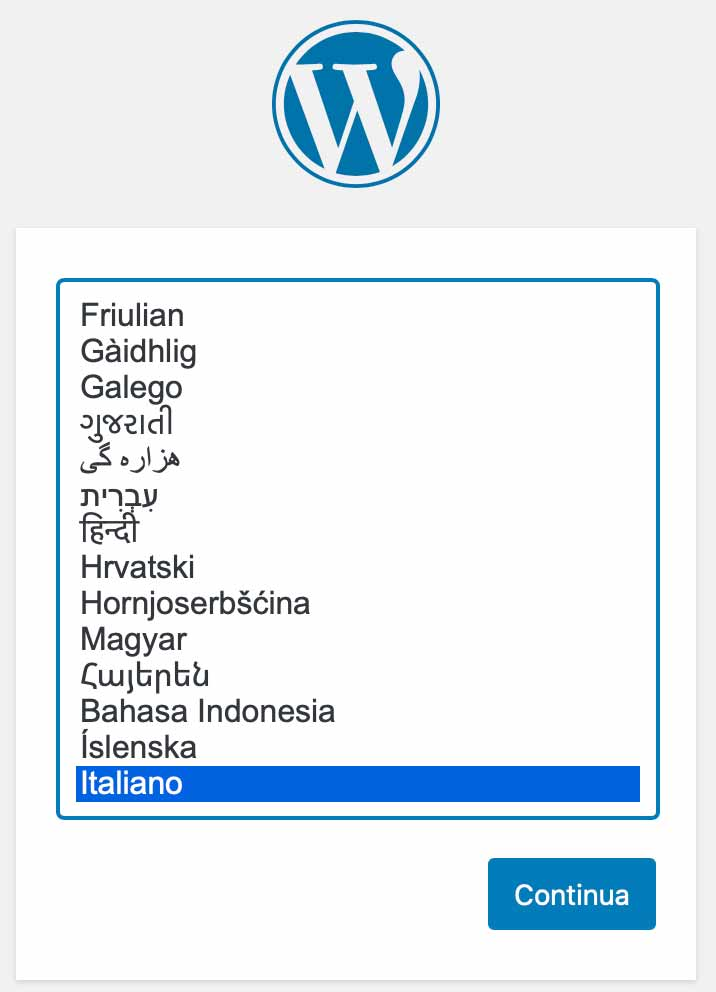Vai avanti
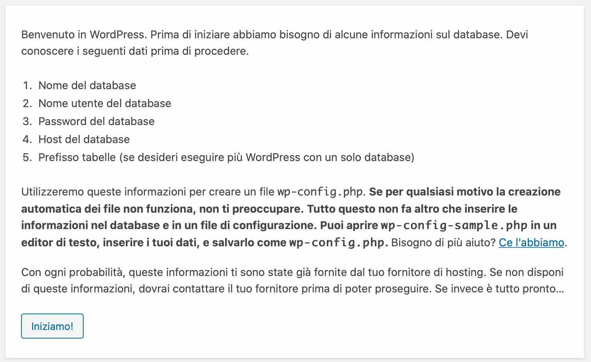
In questa sezione dovrai inserire i parametri di connessione al database presenti sul pannello di altervista. Prefisso tabella lascia pure
wp_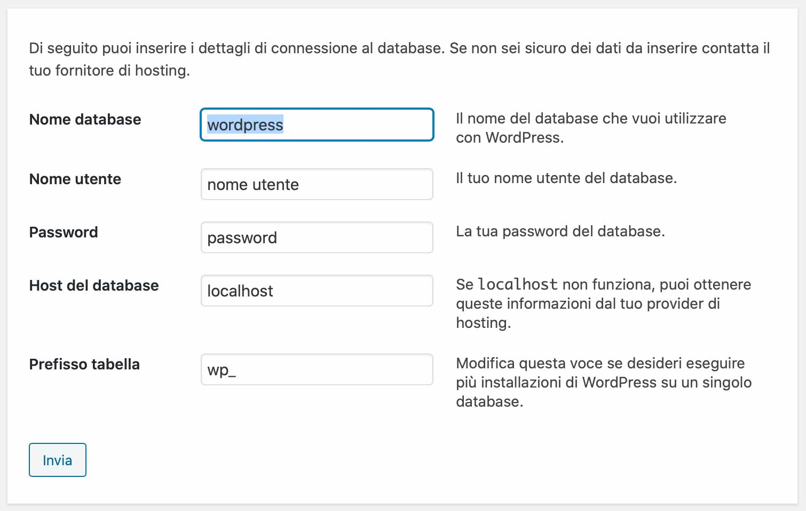
Dopo aver inserito i parametri di connessione al db andando avanti ti chiede di inserire le informazioni relative a wordpress. Mi raccomando inserisci una mail valida perchè ti servirà in futuro
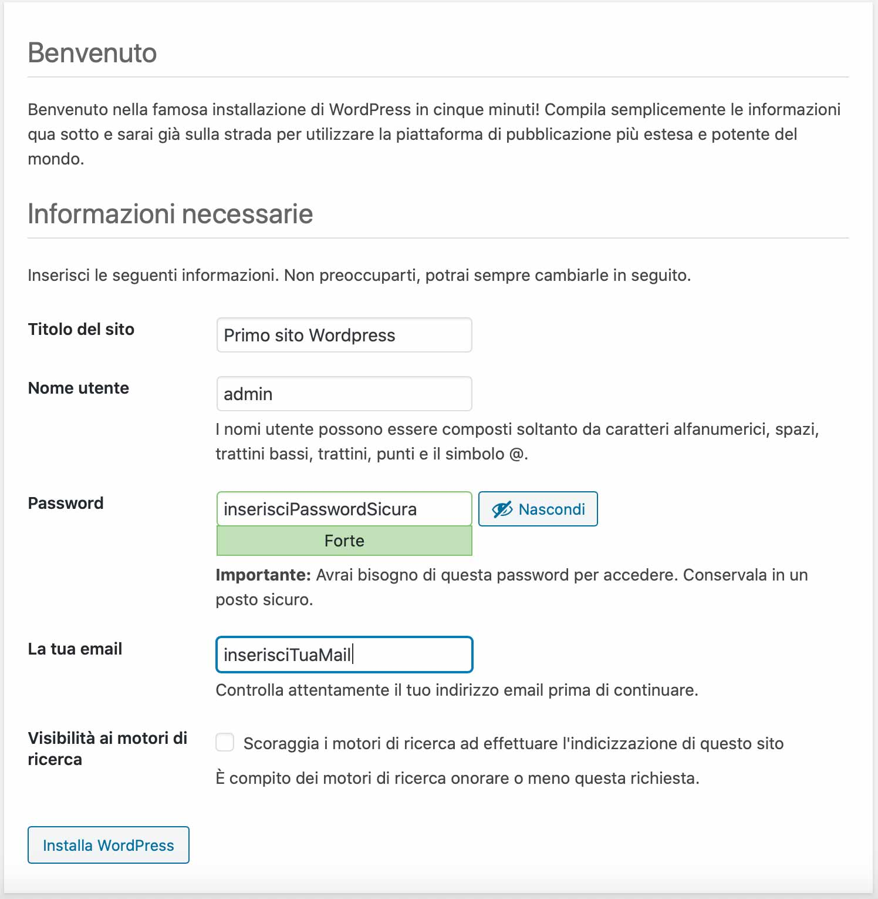
Installazione completata